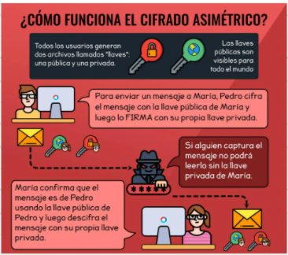

Que es Git?
Git es un software de control de versiones diseñado por Linus Torvalds, pensando en la eficiencia, la confiabilidad y compatibilidad del mantenimiento de versiones de aplicaciones cuando estas tienen un gran número de archivos de código fuente.
Git
Git es un software de control de versiones diseñado por Linus Torvalds, pensando en la eficiencia, la confiabilidad y compatibilidad del mantenimiento de versiones de aplicaciones cuando estas tienen un gran número de archivos de código fuente.
git commit -m "": Funciona para guardar el contenido de un cambio
git checkout: Funciona para moverse entre ramas
git add: Funciona para añadir los cambios
git rm -r: Funciona para eliminar directorios
git rm: Funciona para eliminar archvos
git branch: Funciona para crear una nueva rama
git diff: Funciona para revisar diferencias entre versiones
git merge: hace una mezcla de la rama que quieres fucionar a la rama en la que estas actualmente
git show: muestra todos los cambios
git reset: (hash) --hard: vuelve todo a la version anterior.
--soft: lo mismo pero sin eliminar los archivos locales
git log --graph: para ver como se esta realizando la fusión de las ramas
GitHub
Git es un super servidor en donde se permite alojar portafolios, tambien puede ser una interfaz visual en la que desarrolladores como yo pueden publicar sus proyectos. Es una de las herramientas mas importantes del mundo del desarrollo
git remote add (link): Crea un espacio remoto
git remote -v: nos miestra que tenemos un origin para hacer un fetch; traer cosas. push: para enviar cosas.
git push origin main: enviarle al origen la rama main
git pull origin main: publica el origen en el main
git pull origin main --allow-unrelated-histories: Fuerza a Git a unir las dos historias de commits
git branch -m (nombre antiguo) (nombre nuevo): para cambiar el nombre de la rama.
git remoteset-url origin (nueva url): Para cambiar la url.
Resumen: # Primero: Guardar la URL del repositorio de GitHub
# con el nombre de origin
git remote add origin URL
# Segundo: Verificar que la URL se haya guardado
# correctamente:
git remote
git remote -v
# Tercero: Traer la versión del repositorio remoto y
# hacer merge para crear un commit con los archivos
# de ambas partes. Podemos usar git fetch y git merge
# o solo el git pull con el flag --allow-unrelated-histories:
git pull origin master --allow-unrelated-histories
# Por último, ahora sí podemos hacer git push para guardar
# los cambios de nuestro repositorio local en GitHub:
git push origin master
Cómo funcionan las llaves publicas y privadas:

Configuración de las llaves SSH en local
Crear la llave: ssh-keygen -t rsa -b 4096 -C "fernandoreyezpinto@gmail.com"
Para que el sistema operativo se de cuenta que la llave existe: eval $(ssh-agent -s).
Agent (Significa que el servidor de SSH esta corriendo) pid (Es el identificador del proceso) "numero" (le dice al sistema operativo que el proceso esta corriendo")
Agregar la llave al sistema operativo: me dirijo al home y pongo el siguiente comando; ssh-add ~/.ssh/id_rsa
remote set-url origin: Para cambiar la url del origin
Muestra todos los commits y cambios del proyecto mas entendible: (alias "nombre"=)(nombregit log --all --graph --decorate --oneline
historia: me muestra todos los procesos y commits
le pongo un tag a un commit(versión): git tag -a v0.1 -m "Resultado de la primera clase del curso" 9984c69
git show-ref --tags: me muestra los tags que he generado.
git push origin --tags: Se le envia a origin los tags creados
borrar un tag: git tag -d "nombre tag" git push origin :refs/tags/"nombre de tag"
Manejo de ramas en GitHub:
git show-branch: muestra las ramas y su historia
gitk: muestra en un software los cambios de las ramas